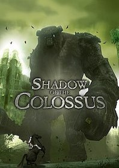

Shadow of the Colossus Review- A Janky Masterpiece

Shadow of the Colossus has the some of the best bosses in a video game and it has an emotional story that, with amazing set-pieces. Shadow of the Colossus is a masterful game with a few flaws.
The story begins with a young man named Wander, trying to save a girl from death and bring her back to life. He makes a deal with Dormin an entity that he will bring the girl back to life, if Wander kills all 16 Colossi. The story from there on is light on details until the very end. The ending is emotional, perfectly rounded off by its themes and visuals. Most of the story is told through gameplay as the beautiful world is mainly lifeless giving players a sense of isolation and sombreness. Travelling the land on your horse Argo, is enjoyable as you also have to use your sword to point you in the direction of each Colossi. If I go deeper into its story it spoils events and this game is one that should not be spoiled.
The gameplay is fantastic but janky in Shadow of the Colossus. I mentioned the traversal gameplay above and it is enjoyable travelling across the desolate world. The only enemies in the game are the 16 Colossi. These Colossi are all bosses and are some of the best in any game. Each boss is both a puzzle and a spectacle. I won't spoil any of the boss weaknesses or designs as that is what the main point of the game is. When you find the weakness of each boss and you begin to attack their weak point and the soundtrack intensifies the game peaks. When riding or climbing Colossi and you are about to defeat them, this where the game shines and each boss is satisfying to beat. The game gives you a sword and bow to defeat the Colossi and it gives you more than enough options to find their weakness and defeat them. The only issue I have with its gameplay is how janky it is. There are many elements that cause climbing and riding a Colossus irritating at many points. There are also some bosses who have annoying weaknesses and sometimes it takes too long for them to react or interact with their weaknesses. It can be annoying at points where the bosses knock you off and you have to do the same puzzles over again, as this can be tedious. The gameplay is constantly good with flawed tedium, repetitiveness and jankiness.
Shadow of the Colossus shines in many areas but also falls flat with some of its gameplay elements. It is a must play for anyone who likes the video games, but only if they can put up with some tedium. Shadow of the Colossus is masterful, with a few gameplay issues.